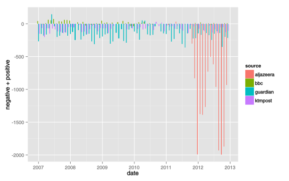

Detecting Opinion
Polarity & Intensity
in Newspaper Texts
2014 Feb 14
MS by Research Candidate
Supervisor
Rohit Man Amatya
Bal Krishna Bal
2014 Feb 14
MS by Research Candidate
Supervisor
Supervisor
Rohit Man Amatya
Bal Krishna Bal
Bal Krishna Bal
1. Introduction
Unlike the data-mining!
Extracting Subjective Information
is an Opinion Mining...
What is
Polarity & Intensity?
2. Problem Definition
2.1 Significance
- Applications
- market review of products
- public opinion
- Visualize data
- Exploring Data
- Finding interesting Results
3. Motivation
- Is a Difficult Task
- Existing Research focused on word/phrase level
3.1 A Difficult Task
3.1 Challenges
- Context & Domain Dependent
- Detection Accuracy
- Accurate polarity is hard to achive with higher levels
- Huge data and Computation Cost.
4. Proposed Solution
5. Research Work

5.1 Checklist
- Workable Prototype
- Web Crawler [ 2012 Sep — 2013 Jul ]✓
- Segmentation [ 2012 Dec — Present ]✓
- autotool [ 2012 Dec — Present ]✓
- angui [ 2013 Apr — Present ]✓
5.1 Checklist...
- Performance Analysis
- Specified Crawler ✓
- Segmentation 10× nltk ✓
- Visualization
- Plotting ✓
- Geo-mapping ✗
- POS tag integration ✗
- Machine Learning ✗
- Paper Presentation in LSN [ 2013 Nov ] ✓
6. Research Outcomes
6.1 Data Scrapping
6.2 New Tagging Method
#./main.py ../../data/editorials/samples/flip.txt
[34;1;301mFlipper test[0m
[34;1;302mRho[0m
[34;1;303m2013/05/20[0m
[34;1;304mcollected text[0m
[38;5;245;1;349m0.0 [0mThe cinema was [32;453mgood[0m.[38;5;10;1;353m{1.0/1}[0m
[38;5;245;1;349m1.0 [0mThe cinema was [48;5;172;401mnot[0m [32;9;453mgood[0m.[38;5;9;1;351m{-1.0/1}[0m
[38;5;245;1;349m2.0 [0mThe [31;451mplot[0m of the cinema was [32;453mgood[0m [34;503;504mbut[0m the actors did [48;5;172;401mnot[0m perform [32;9;453msatisfactorily[0m.[38;5;9;1;351m{-1.0/3}[0m
[38;5;245;1;349m3.0 [0mMy [31;451mpain[0m has disappeard [34;507;506mafter[0m taking the drug.[38;5;9;1;351m{-1.0/1}[0m
[38;5;245;1;349m4.0 [0m[48;5;172;401mnot[0m [35;501;522;551;403mso[0m [32;9;1;453mgood[0m some thing [48;5;172;401mnot[0m [35;402mquite[0m [32;9;3;453mgood[0m [38;5;9;1;351m{-2.5/2}[0m
6.3 GUI article Manager
10,000+ articles
6.4 Visualization
6.4 Visualization...
6.4 Visualization...
6.5 Features
- Specified Crawler
- New Tagging Style
- GUI article manager
- Visualization
- Supports नेपाली
- Fast »
7. Future Work
- Improving Accuracy of the System
- keyword search through time
- entity lock event & trend analysis
- Machine learning